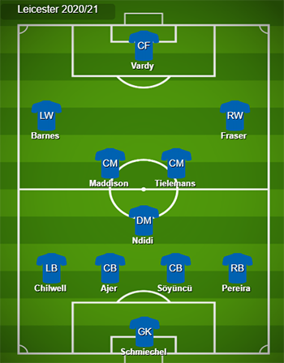

In my opinion, Leicester City have had a very good 5 years since they won the Premier League Title in the 2015/2016 season being able to secure themselves as a top flight side finishing 12th in the next season before finishing 9th in two back to back seasons.Whilst they hadn't been able to establish the same attacking identity for a few years, Brendan Rodgers has got them back on the right track.They are currently on track to qualify for the Champions League for the 2nd time in their history which means that they need to invest in their squad.The image below is the current starting 11 going towards the end of the season.
In the summer transfer window I believe that they will make a few signings to contribute to the strong squad that they already have. I don't think they will get rid of Jamie Vardy as he is their talisman but I believe that Brendan Rodgers will be on the lookout for a new striker for the future but not to replace Vardy next season as he is still producing very good goal returns. However I do think that they will bring in a new right winger in Ryan Fraser who could finally get a chance to show that he is capable of playing European Football, he would certainly provide competition for Ayoze Perez who has done quite well since joining from Newcastle for 30 million pound. The depth will be required especially with them being in the Champions League next season having to play more games than the previous 2. I also believe that Brendan will wish to improve his backline with Wes Morgan likely to not be given a new deal which is why he is going after Celtic Defender Krisstofer Ajer whom he previously managed with a 25 million pound bid being discussed. The image below is how I believe Leicester will set up next year.
Finally as to where I believe that Leicester will finish in the league, I do not think that they will finish as high as they did this season due to many teams being off of their game with Arsenal and Tottenham being further down the table having dropping multiple points. I still believe that they will qualify for European Football but I don't think they will finish in the Champions League places due to the fact I think more teams will be at the races after such a dominant display from Liverpool this season.